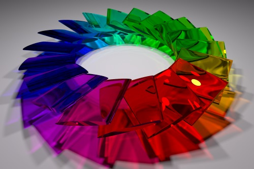

Blog of Matthew Daws
Enumerate in C++
One of the fun things about C++11 is that minor changes allow you to write somewhat more expressive (aka Pythonic) code.
A common pattern is to iterate over an array while also knowing the index you are at. Python does this with the enumerate keyword:
for index, x in enumerate(container):
print("At {} is {}".format(index, x))
In C++ the idiomatic way to do this is perhaps:
std::vector<int> container;
...
for (int i = 0; i < container.size(); ++i) {
std::cout << "At " << i << " is " << container[i] << "\n";
}
This has its flaws though (and is tedious to type). Using g++, if you have warnings on, -Wall, then you'll see complaint, as the type of container.size() is, typically, of size std::size_t which on my machine is unsigned long long (aka an unsigned 64-bit number). Warnings aside, as int is on my machine a 32-bit unsigned number, we could potentially have problems if the size of container is more than around 2 billion (unlikely, but possible these days).
Jam 2012 Qualification Round
Last one of these for a while. Problem D became an obsession. As ever, links to: Official Contest Analysis and my code on GitHub.
Problem A, Speaking in Tongues: Could be solved with pen and paper, as all the information you need is sneakily in the question.
Read More →Jam 2012 Round 1A
Wrapping up with these... The final problem was rather hard, and in the end was an exercise in profiling... As ever, links to: Official Contest Analysis and my code on GitHub.
Problem A, Password Problem: You have typed A characters of your password, and the probability you typed letter i correctly is \( p_i \), for i=1,...,A. You can press backspace from 0 to A times and type again, or just give up and retype. All your typing will from now on be 100% accurate, and pressing enter counts as a keypress. For each strategy compute the expected number of keypresses needed (if you get the password wrong, you'll have to retype it) and return the lowest expected number of keypresses needed. Your password is B characters in total.
Jam 2015 Round 1C
Urgh, so failure! Some silly (stupid) errors meant my good start of getting problem A out in 16 minutes didn't get me anywhere, as a silly not checking the boundary conditions killed problem B, and not thinking on paper long enough got to problem C. 3 hours and less stress, and it would have been 100/100, but I guess everyone says that about exams. (Of course, given the competition, Round 2 was going to be the end anyway).
As ever, links to: Official Contest Analysis and my code on GitHub.
Problem A, Brattleship: It's in your brother's interest to drag the game out for as long as possible: once he says "hit" we move to a 2nd phase which can only end more quickly.
- So the worst case is when the brat says "miss" until he has no choice but to say hit.
- You want to chop the board up into regions where the ship cannot hit: so strips of width
W-1. So we hit pointsW, 2*W, 3*W, ... - Do each row, and then in the final row, at the final point, brat must say "hit" and we move to a 2nd algorithm of finding the ship.
Jam 2015 Round 1B
Busy at 5pm Saturday when this ran (so all the eggs in the final basket of round 1C). Under timed conditions, I did problem A very slowly, and B-small in the time, so would have qualified at around place 770. B-large took a bit longer, and Problem C wasn't really looked at in the time limit. Hard problems...
As ever, links to: Official Contest Analysis and my code on GitHub.
Problem A, Counter Culture: How fast can you get from N from 1 if you are allowed moves of: say one more than the last numbers; or reverse the decimal number. E.g. 1, 2, 3, 4, 5, 6, 7, 8, 9, 10, 11, 12, 21, 22, 23 is the quickest route to 23.
Codingame
I've spent some time on Codingame which is an on-line Competitive programming site, based around computer games. (Though only loosely: some puzzles are just puzzles like Google Code Jam, and the "games" are often pretty obviously graph or search based puzzles). But it's kind of fun: certainly the more interactive puzzles, where your solution has to respond to unknown, almost real-time, inputs, is entertaining.
Read More →LuxRender of my profile picture

As a change, here is a puzzle I never quite got to the bottom of a few years ago. Just some flattened disks arranged in a circle and then rendered using LuxRender. I rather like the effect. There are two ways to make a cylinder shape: either use the inbuilt primitive objects (so a cylinder with disks top and bottom) or export a cylinder from Blender as a mesh. Actually, I rolled my own using a python script:
Read More →Jam 2013 Round 1B
As ever, links to: Official Contest Analysis and my code on GitHub.
I did this under timed conditions, and would have just qualified. A silly error was all which stood between B large and me...
Problem A, Osmos: Start with A and \( (x_i)_{i=1}^N \) integers. You can absorb one of the \( x_i \) if it's smaller than A, and then A grows by \( x_i \). Help Armin to be able to absorb all the numbers by adjusting the initial set:
- You can add any new number;
- You can remove a number.
What is the least number of moves to get a valid set?
Read More →